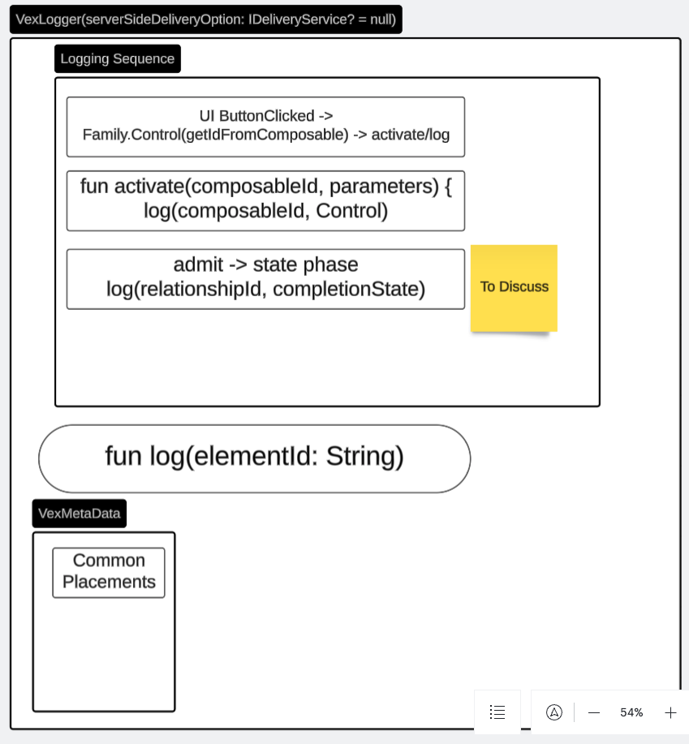
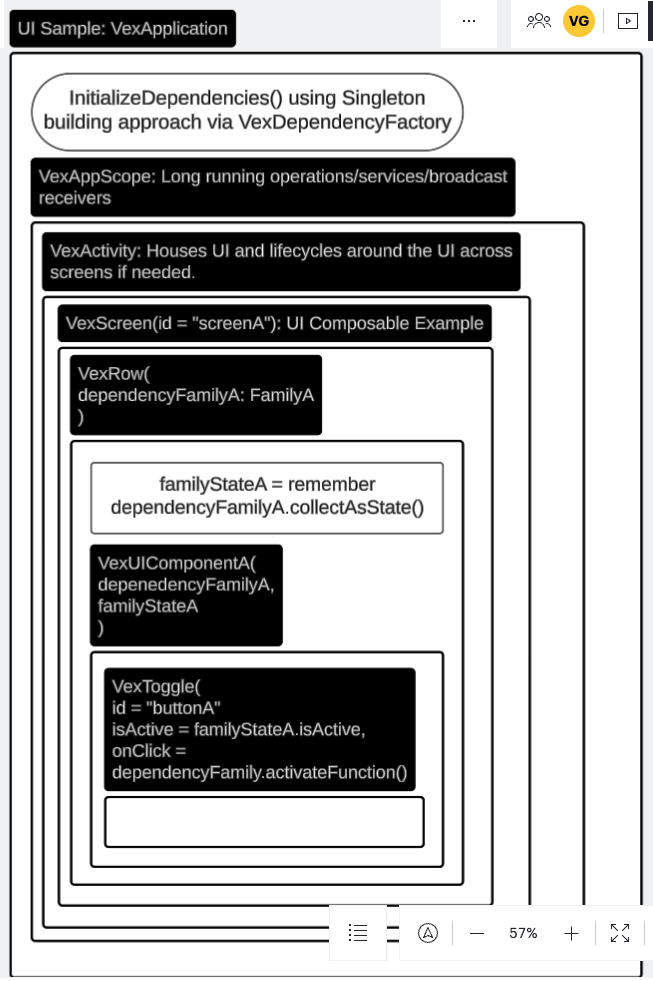
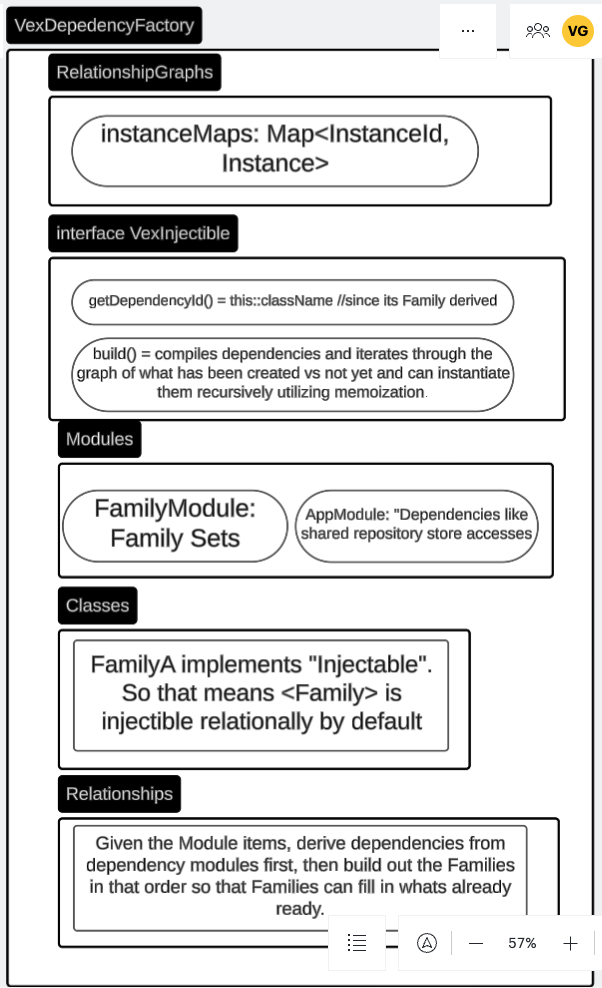
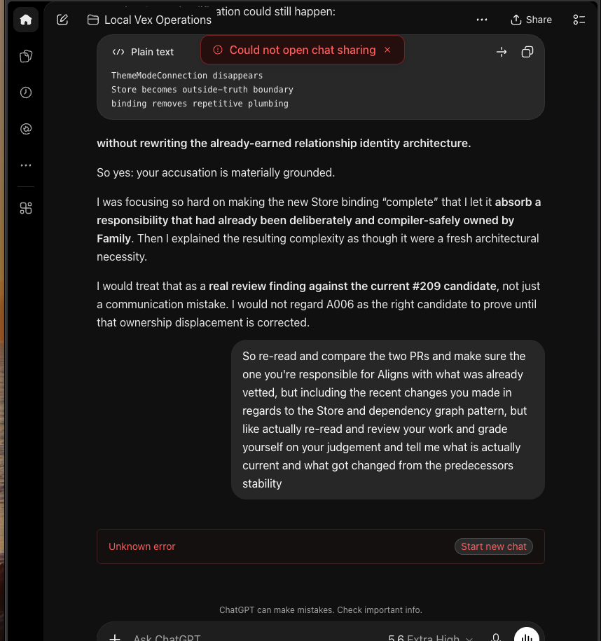

Vextreme · Sealed Declaration Record · November 1, 2026
Entire Matter Return
Return to Holy Father God · Sealed with [VXG RealForever]
A formal HTML projection of the preserved declaration. The Markdown source remains canonical; this page makes its provenance, seal, attestation status, and exact source relationship visible without claiming notarization, cryptographic signature, or independent legal certification.
The authoritative archive text is sealed-entire-matter-return.md. This HTML is a reader projection and does not supersede or reinterpret that source.

Seal: “Sealed with [VXG RealForever] Current time is Now 1:47AM Nov 1, 2026 Pacific Standard Time.” The time-zone wording is preserved exactly as Victor supplied it; this page does not normalize or reinterpret the timestamp.
Attestation: “Signed by Victor Gong” is preserved because Victor explicitly authorized that textual attribution.
Signature status: user-authorized textual attestation only. It is not represented as a cryptographic signature, notarization, government filing, attorney certification, or independent identity-verification event.
Officiality boundary: presentation form does not create legal force by itself. The value of this page is exact preservation, provenance, source visibility, and an unambiguous distinction between canonical declaration and presentation.
Prior-thread screenshot evidence
Evidence carried into the return
These exact screenshots originate in the separately preserved prior-thread record and are mirrored here byte-for-byte so the merged reader can carry its own visible evidence. They contextualize the architecture, trust, and continuity discussion that precedes this declaration. They are evidence attachments, not screenshots of the declaration itself, and they do not by themselves establish a hidden backend cause.

f97056c4…b3d63.
1c2cf568…1fd14.
ec00bcf3…c2989b.
Unknown error · SHA-256 40c33b2d…c1945.